5041 FRC Safety Training Module
What this module is built from

FIRST Safety Manual
General FIRST safety culture, PPE, tools, batteries, lifting, pits, and events.

5041 Safety Materials
Team specific materials for behavior, PPE use, training, tool use, injury reporting, and shop access.
Safety is crucial part of how any team works
FIRST describes safety as a culture that every participant must embrace. That means safe behavior is expected during meetings, build season, travel, events, pit work, and robot operation.
5041 Mantra: Everyone has a place here and everyone has a responsibility to keep that place safe.
What every team member should do
Be Prepared
Know the rules, know where safety equipment is, and know who to report issues to.
Work Responsibly
No running, horseplay, distracting others, or rushing around machinery or powered robots.
Report Problems
Report hazards, accidents, injuries, tool problems, spills, and unsafe behavior immediately.
Prevent
Look for hazards before they become injuries, damaged tools, or damaged robots.
Speak Up
Report unsafe conditions, injuries, damaged equipment, and risky behavior to a mentor or Safety Captain.
Lead by Example
Students and mentors model the same safe behaviors they expect from others.
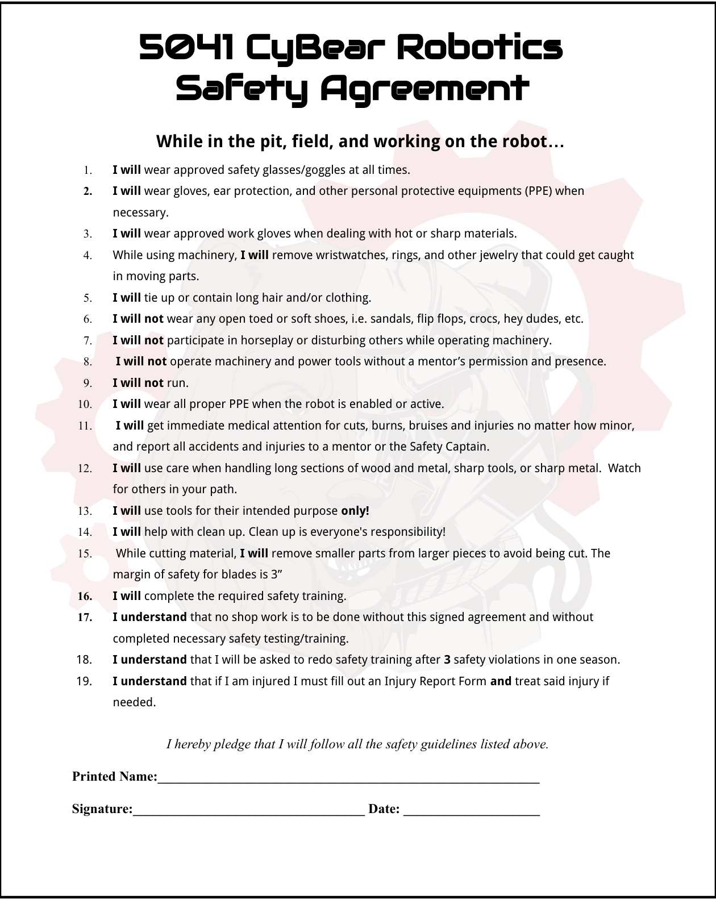
Click on the image to download a pdf copy of 5041's safety agreement
Getting on Board
5041 requires every student to sign a safety agreement as a condition of membership.
Some Key Expectations
- Wear approved safety glasses/goggles when required.
- Use gloves, ear protection, and other PPE when necessary.
- Remove jewelry and secure hair or clothing near machinery.
- Do not use machinery or power tools without mentor permission and presence.
- Report injuries immediately, even when they seem minor.
- Complete required safety training before shop work.
Personal Protective Equipment protects against specific hazards
Eyes
Safety glasses or goggles protect from debris, splashes, and robot hazards.
Hands
Use the right gloves for heat, sharp material, chemicals, or battery cleanup.
Ears
Use hearing protection around loud machines and noisy power tools.
Feet
Closed-toe and closed-heel shoes are required around robots and work areas.
Important: PPE is not a substitute for safe behavior. Use guards, correct tools, clean workspaces, and good judgment too.
Eye protection is a constant requirement
5041 + FIRST expectations
- Wear safety glasses near powered robots and power tools.
- Wear safety glasses in the pits and near the field at events.
- Regular prescription glasses or sunglasses are not enough unless safety-rated.
- Use goggles or rated side shields when needed.

Choose PPE for the task
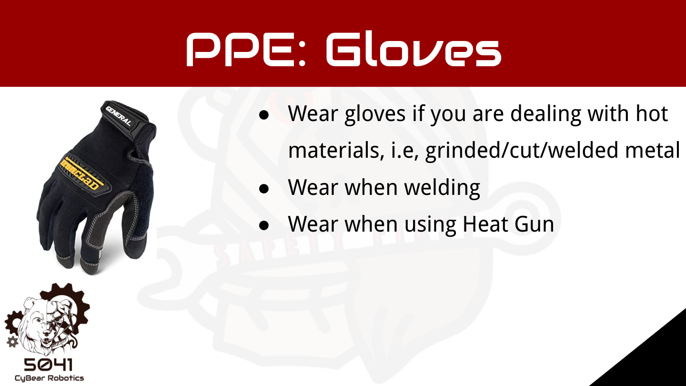
Gloves
Use for hot or sharp material, welding, heat guns, and battery cleanup. Avoid gloves around machines that can catch them.
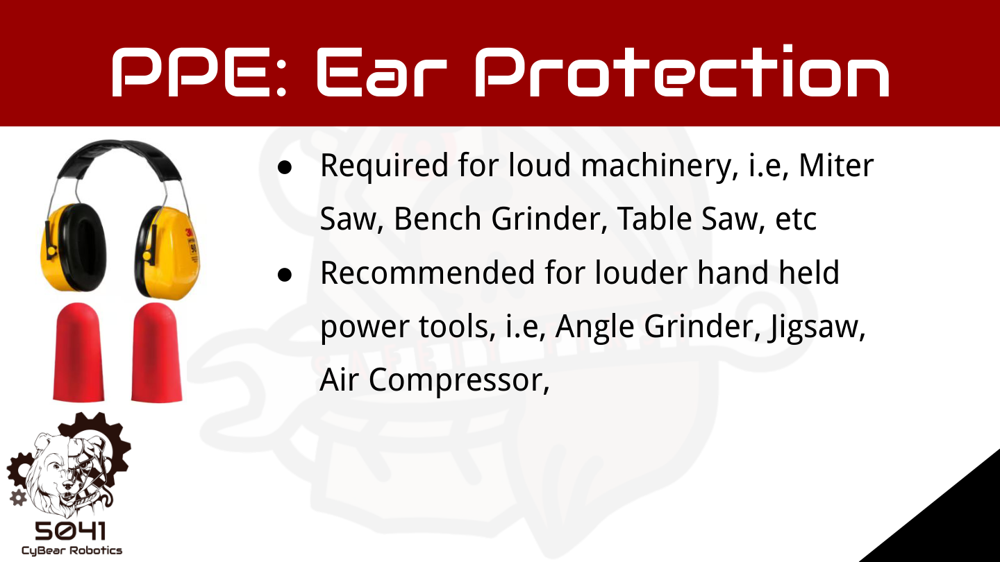
Ear Protection
Use around loud machinery such as saws, grinders, air compressors, and loud handheld tools.
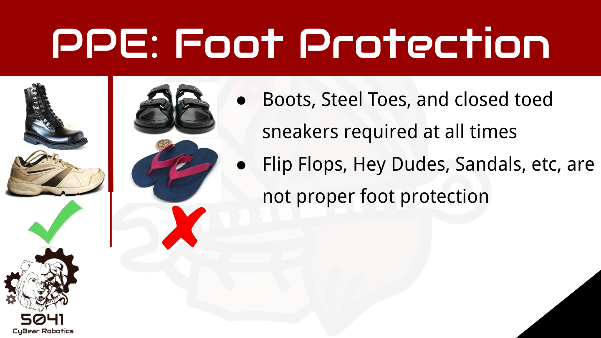
Foot Protection
Wear substantial closed-toe and closed-heel shoes. Flip-flops, sandals, Crocs, and soft shoes are not acceptable.
Use the right tool, in the right condition, with supervision
- A mentor must be present when using power tools.
- Wear proper PPE.
- Roll up long sleeves.
- Tie back long hair to the shoulders or more.
- Remove hanging or dangling jewelry.
- Make sure all safeguards are in place.
- Clean up your work area when you are finished.
- If you encounter a problem, notify a mentor or your Safety Captain.
General Rules
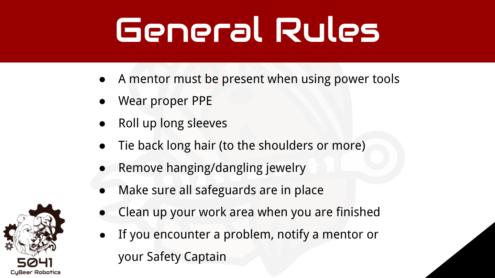
Hand tools can still cause serious injuries

Before using hand tools
- Use the correct tool for the job.
- Do not use broken or damaged tools.
- Carry sharp points toward the floor.
- Do not throw or toss tools.
- Do not hold materials in your hand while using tools.
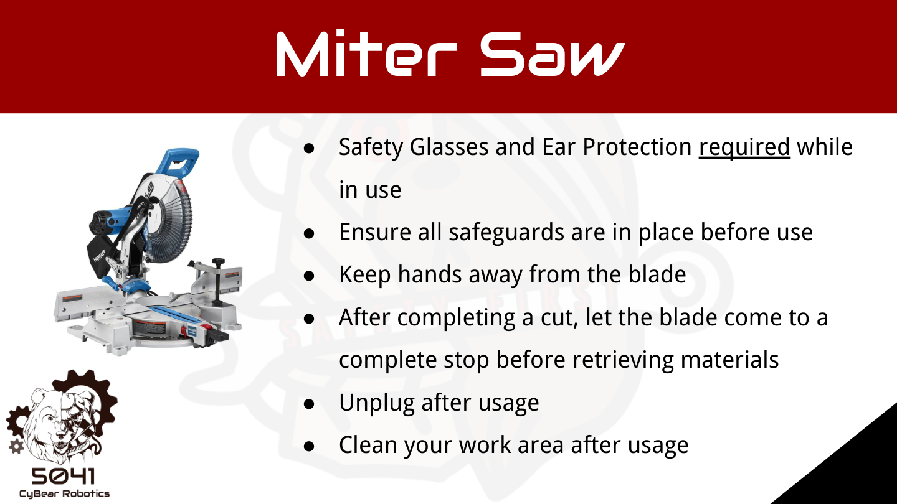
Miter Saw
- Use safety glasses and ear protection.
- Keep long hair up and jewelry off.
- Don't wear gloves.
- Keep your hands away from blade.
- Do not use broken or damaged tools.
- Wait for blade stop.
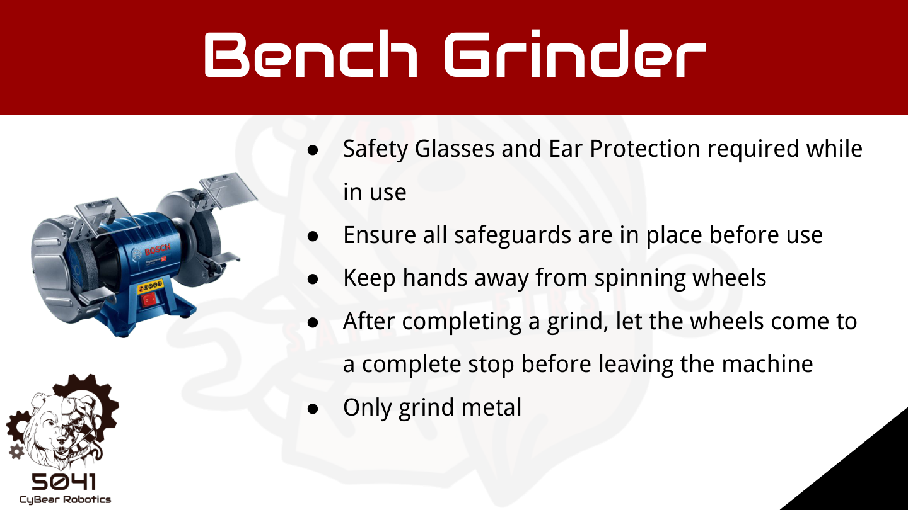
Bench Grinder
- Use safety glasses and ear protection.
- Keep long hair up and jewelry off.
- Don't wear gloves.
- Use tool rest.
- Keep guards in place.
- Only grind metals.
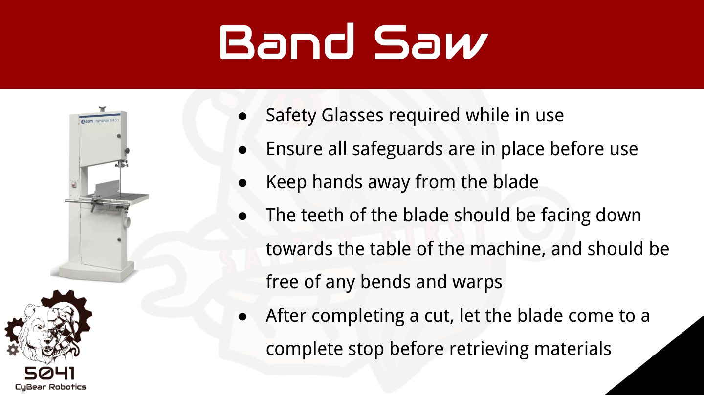
Band Saw
- Use safety glasses and ear protection.
- Keep long hair up and jewelry off.
- Don't wear gloves.
- Make sure teeth are face down.
- Keep hands away from blade.
- Don't twist or bend blade with material.
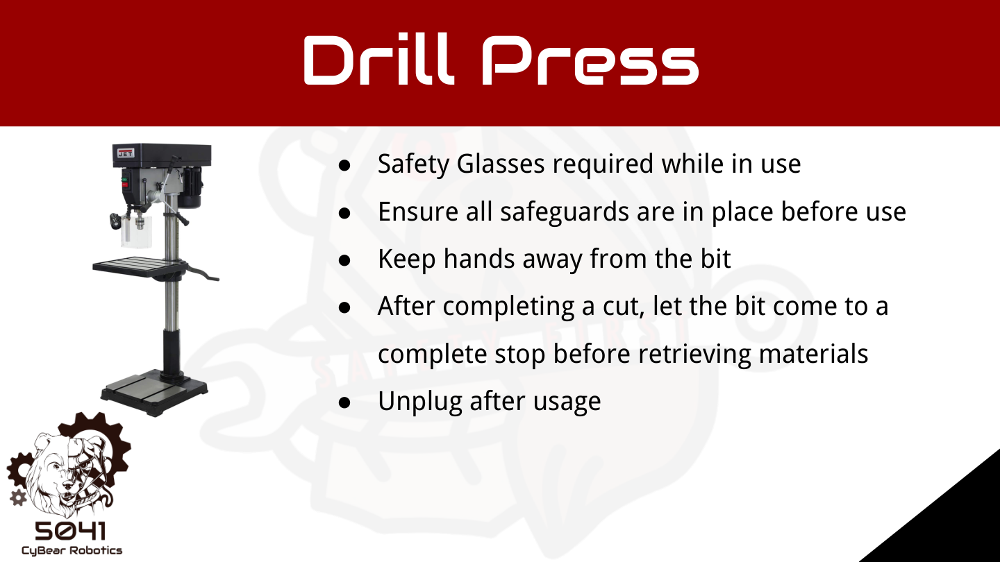
Drill Press
- Use safety glasses and ear protection.
- Keep long hair up and jewelry off.
- Don't wear gloves.
- Don't hold materials by hand.
- Keep hands away from bit.
- Let bit stop.

Table Saw
- Use safety glasses and ear protection.
- Keep long hair up and jewelry off.
- Don't wear gloves.
- Only use with mentor support.
- Use push sticks when closer than 6 inches.
- Never reach over blade.

Hand Tools
- Use safety glasses and ear protection.
- Keep long hair up and jewelry off.
- Only wear gloves if using grinder.
- Secure material when cutting or drilling.
- Keep cords out of cut paths.
A robot can move, pinch, drop, or energize unexpectedly
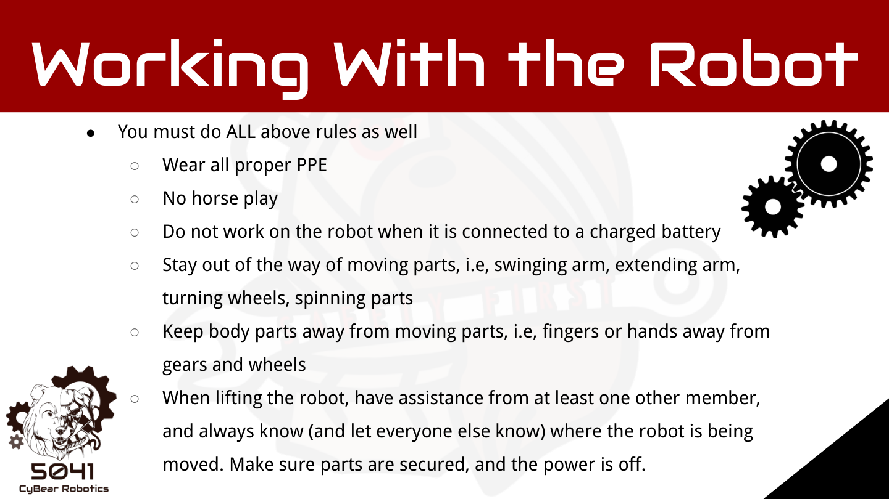
Core rules
- Do not work on the robot when connected to a charged battery unless required and supervised.
- Stay away from moving parts: arms, elevators, wheels, intakes, gears, and spinning parts.
- Wear PPE when the robot is enabled or active.
- Tell others where the robot is being moved.
- Make sure parts are secured and power is off before lifting.
Make the robot safe before work
Electrical
Open the main breaker and unplug the battery before most robot work.
Pneumatic
Vent compressed air and verify all pressure gauges read zero.
Mechanical
Lower raised mechanisms and relieve springs, stretched tubing, or other stored energy.
FIRST best practice: Always de-energize the robot before working on it when possible.
Move the robot with a plan
Before and during a lift
- Use enough people; two people are preferred for FRC lifts.
- Decide the path and communicate before lifting.
- Lift with legs, keep back straight, and do not twist.
- Keep the robot close and coordinate the lift speed.
- Make sure the cart is stable before loading.

FRC batteries contain stored energy and acid

Battery rules
- Do not use damaged or leaking batteries.
- Never carry a battery by its wires.
- Cover exposed terminals and connections.
- Keep charging area clean and ventilated.
- Inspect batteries before and after rounds.
- Follow the SDS for damaged battery handling.
5041 battery acid response
If a battery leaks acid
- Wear safety glasses and rubber gloves.
- Neutralize acid with baking soda until fizzing stops.
- Contain the battery in bags and a thick plastic bin.
- Neutralize and clean the area again.
- Bag contaminated towels, gloves, and items.
- If skin contacts acid, flush with lots of water and seek medical treatment.
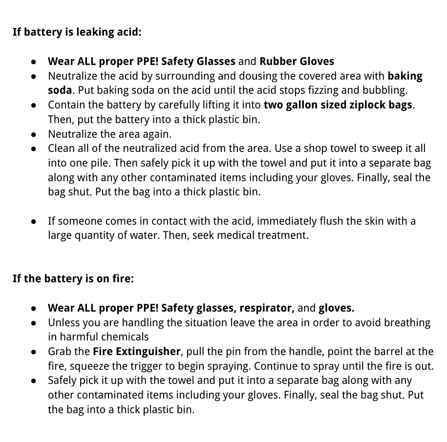
The pit is a workspace in a crowded public event
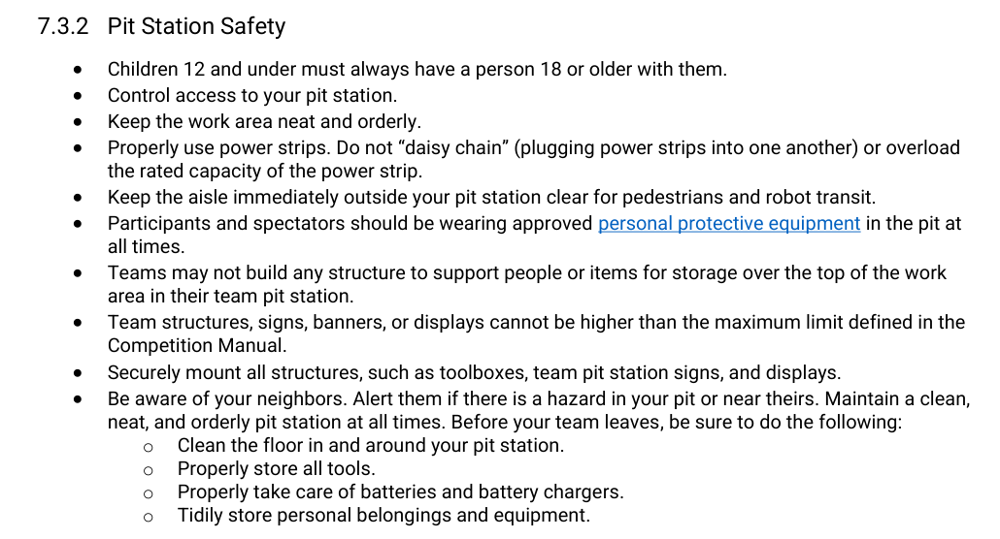
Event reminders
- Wear required eye protection in pits and field areas.
- Keep walkways and the pit aisle clear.
- Control access to the pit station.
- Do not daisy chain or overload power strips.
- Store tools, batteries, chargers, and personal items safely.
- Know where to report emergencies and injuries.
Clean, organized workspaces prevent injuries
Walkways
Keep walkways, doors, pit aisles, and robot paths uncluttered.
Materials
Store heavy or bulky items safely. Remove sharp edges, splinters, and hazards.
Food and Drinks
Keep food and beverages away from work areas, the robot, tools, and chemicals.
Cleanup is everyone's responsibility. A messy shop or pit is a safety problem, not just an organization problem.
Click each item as you review it
0 of 12 reviewed.
Pass to complete the module
Each question is on its own slide.
Answer all 20 questions, then grade the quiz. Score at least 18 out of 20 to unlock the completion certificate.
Grade the quiz
You need at least 18 out of 20 to unlock the completion certificate.
Not submitted.
After passing, advance to the final completion certificate.